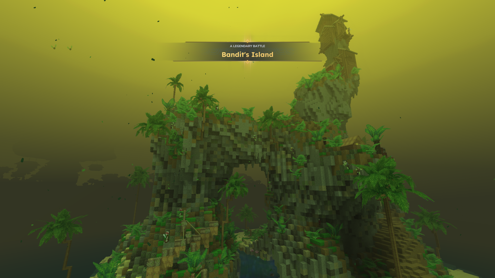
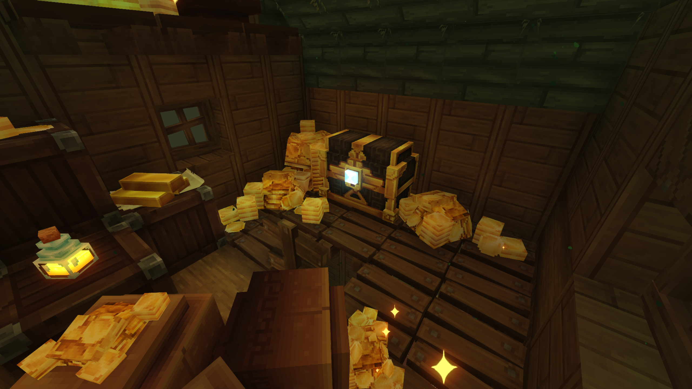
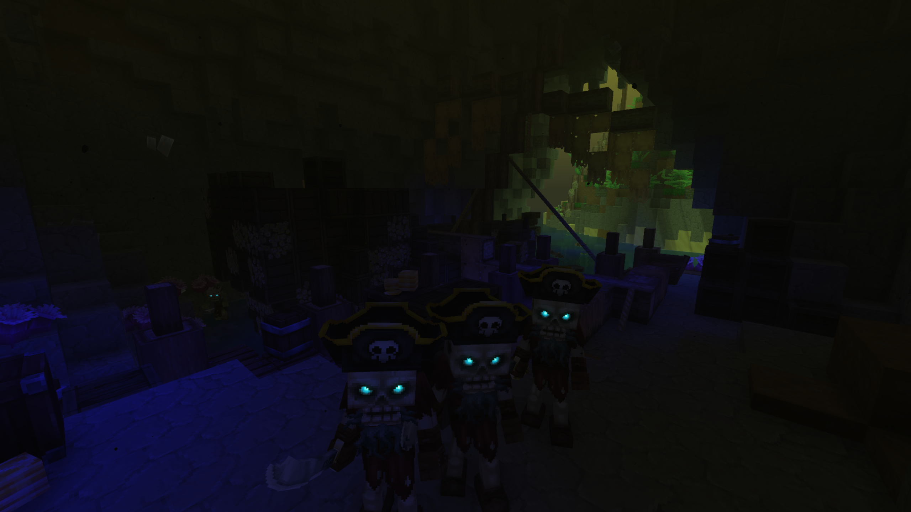
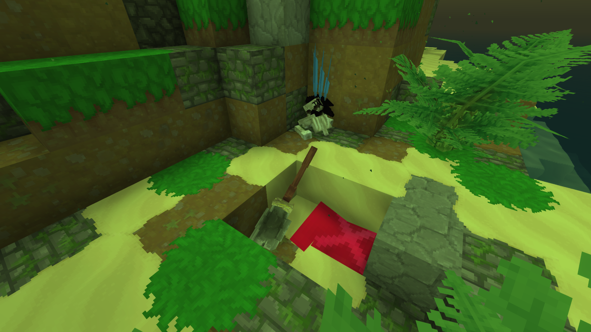
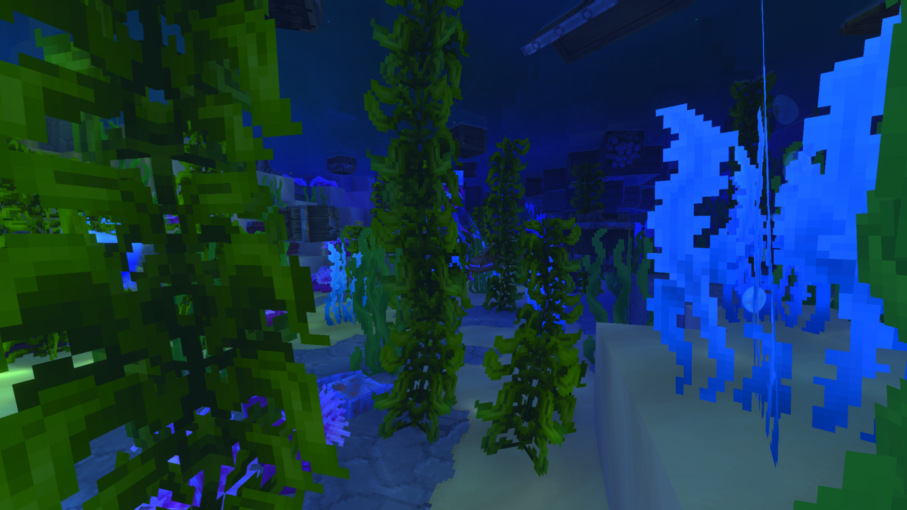
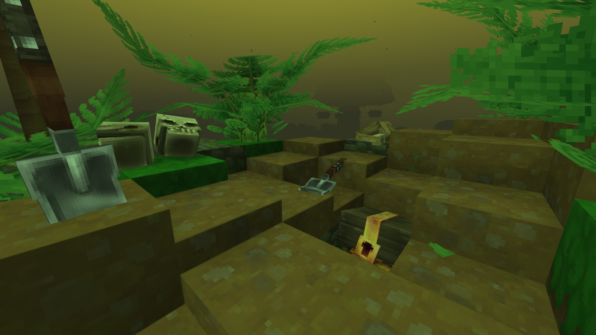

Jutting violently out of the murky, mist-shrouded waters, Bandit Island is a jagged tropical fortress of moss-covered stone and lawless brutality—a continuous battlefield where only the strongest cutthroats survive.
Bandit Island

| Location Information | |
|---|---|
| Coordinates | X: 617, Z: 787 |
| Area Type | Rural Ruins |
| Mob Threat | Very High |
| Bandit Threat | High |
| Number of Chests | 19 |
| Water Source | Yes |
| Clean Water Source | No |
| Fireplace | No |
| Chef's Stove | No |
| Workbench | No |
| Available Loot | ||
|---|---|---|
| 🍎 Food | ✗ | |
| 🥛 Civilian | Tier 1 | ✗ | |
| ✂️ Civilian | Tier 2 | ✗ | |
| 🛠️ Civilian | Tier 3 | 4 | |
| 🛡️ Military | Tier 1 | ✗ | |
| ⚔️ Military | Tier 2 | 4 | |
| 🏹 Military | Tier 3 | 11 | |
| 🌟 Legendary | ✔ | |
Lore
Jutting violently out of the murky, mist-shrouded waters, Bandit Island is a jagged tropical fortress of moss-covered stone and lawless brutality—a continuous battlefield where only the strongest cutthroats survive.
The Eternal Turf War
Situated dangerously close to the bustling docks of Pirate's Cape, Bandit Island serves as a major, high-intensity hotspot for the region's most ruthless outlaws and rogue factions. Unlike the relatively organized trade that governs the nearby port town, this vertical mass of stone knows no treaties or alliances. The island is locked in a state of perpetual violence, overrun by aggressive bandit crews who constantly clash along the narrow cliffside paths and muddy riverbanks.
The landscape itself is defined by a massive, natural stone archway covered in dense tropical greenery and towering palm trees. Perched precariously at the absolute peak of the highest sea stack sits a multi-layered wooden tower, serving as the ultimate vantage point for whichever crew currently holds the upper hand.
The Prize of the Peak
The sheer ferocity of the fighting on Bandit Island is driven by one thing alone: the prize of legendary loot. Deep within the island's fortified structures—rumored to be heavily guarded at the top of the precarious cliffside tower—lies an untouched, highly coveted **Legendary chest**.
This fabled container holds wealth and rare armaments beyond imagination, drawing waves of ambitious thieves and exiled warriors to the island like moths to a flame. The bandits aren't just defending their territory from outsiders; they are constantly killing each other for a chance to claim the legendary contents for themselves.
Anatomy of the Island
- The massive natural stone archway, forming a defensive bridge and a choke point for anyone trying to ascend the cliffs.
- The high cliffside wooden tower, overlooking the entire region and serving as the primary stronghold for the dominant crew.
- The dense tropical jungle terrain, providing ample cover for ambush tactics and guerrilla warfare among the ruins.
- The close coastal proximity to Pirate's Cape, allowing a constant influx of new contenders eager to join the fray.
Present Day
For daring adventurers, navigating Bandit Island is a chaotic, non-stop gauntlet. The zone is treated as a highly volatile combat arena where players must contend with both the verticality of the terrain and multiple aggressive NPC bandit factions fighting simultaneously. While the lower beaches offer minor scrap and supply caches, reaching the legendary chest at the summit requires carving a path through an active warzone, turning the island into one of the most thrilling and high-risk challenges in the region.
Keep your blade drawn and your eyes on the cliffs above when setting foot on Bandit Island. The legendary loot at the peak is earned in blood, and every outlaw you meet is fighting to ensure your bones join the foundations of the tower.
Gallery




